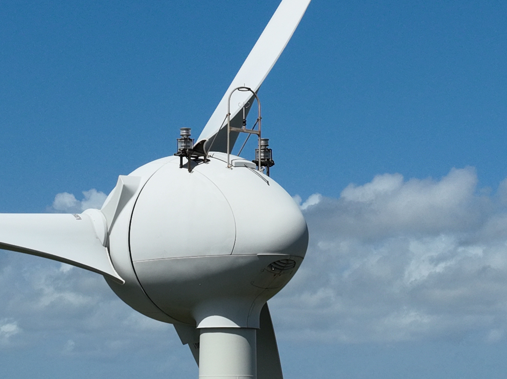
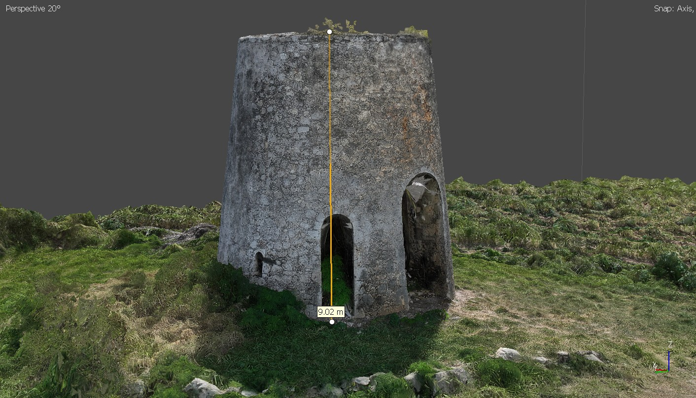

Services de drone professionnel en Guadeloupe
Acquisition de données et post-traitement sur mesure, avec livraison de livrables exploitables dans vos outils métiers. Interventions en Guadeloupe et dans les Antilles françaises.

Agriculture de précision par drone
Indices NDVI, NDRE, NDWI pour l'agriculture en Guadeloupe. Détection du stress hydrique, comptage des plants et cartographie de la santé des cultures par drone multispectral.

Inspection technique par drone
Contrôle non destructif de toitures, façades, pylônes, ponts et infrastructures difficiles d'accès en Guadeloupe et Antilles. Rapport photographique géolocalisé.

Photogrammétrie et modélisation 3D
Nuages de points denses, modèles 3D texturés, MNS. Idéal pour la documentation de bâtiments, ouvrages et sites patrimoniaux en Guadeloupe.

Cartographie aérienne et orthophotos
Orthomosaïques haute résolution (jusqu'à 2 cm/px), plans de masse et cartes géoréférencées. Livrables GeoTIFF, formats SIG standards pour la Guadeloupe et les Antilles.
Topographie drone et cubatures
Relevés topographiques de précision centimétrique, calcul de volumes déblais/remblais, plans de masse pour chantiers BTP en Guadeloupe et Antilles françaises.

Photographie et vidéo aérienne 4K
Prises de vues aériennes professionnelles par drone pour communication, immobilier et tourisme en Guadeloupe. Fichiers RAW et vidéo 4K livrés sur support numérique.
Tarifs drone professionnel en Guadeloupe
Grille tarifaire de référence. Chaque mission est unique — un devis personnalisé vous sera transmis sous 24h.
Ils varient selon la durée, la zone, les conditions de vol et les livrables demandés.
- Captation drone en résolution 4K
- Fichiers bruts haute qualité
- Sélection et tri des meilleures prises
- Livraison sur support numérique
- Durée et format adaptés à votre usage
Immobilier, tourisme, communication, événementiel. Tarif indicatif, varie selon la durée et la zone de vol.
- Captation drone haute résolution
- Fichiers RAW + JPEG livrés
- Sélection des meilleures prises
- Livraison sur support numérique
- Nombre de clichés selon vos besoins
Immobilier, patrimoine, événementiel, communication. Tarif indicatif, varie selon la durée et la zone de vol.
- Plan de vol & autorisations
- Acquisition par drone (RTK)
- Traitement photogrammétrique complet
- Orthomosaïque, MNS, nuage de points 3D
- Analyse multispectrale (NDVI/NDRE/NDWI)
- Rapport d'inspection géolocalisé
- Livrables aux formats SIG standards
Cartographie, inspection, topographie, cubatures, analyse environnementale.